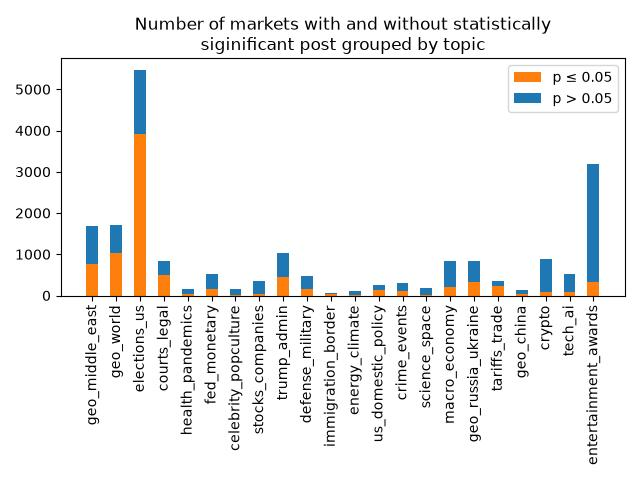

Results
Meta Results
Trump's social media posts have no correlation with the majority of markets which remain after the pruning step. Out of the 20074 markets in the analysis output ~41.13% have at least one post with significant correlation. Of the posts which were matched to a market, slightly above half were significant to some market.
 |
 |
Grouping the markets by topic and performing the same analysis shows that there seems to be no direct correlation between the number of markets in a category and the percentage of markets with (at least one) statistically significant social media post.

Results
Correlation Results
Our analysis shows that for most topics there are markets where Trumps social media posts highly correlate with its subsequent movements. Due to the sheer density of markets upon visual inspection it seems that many of the markets have correlation of what we assume to be false positives. However our tool helps in identifying markets where there is potentially a correlating effect. Within certain categories there is a high abundance of markets where a by-eye analysis will have most people convinced that Trumps posts had a direct effect on the market movements.
In our opinion the most promising categories are: geo_middle_east, geo_russia_ukraine, tariffs_trade.
Here are some of our favourite analysis results:
The graphs showcased above are just our top contenders for best restuls. In total we generated 330 plots, feel free to explore them here.
Be aware that we only generated plots for the top 15 markets per category. Generating all ~20k plots would consume ~97GB, which exceeds the limits of a free GitHub repository.